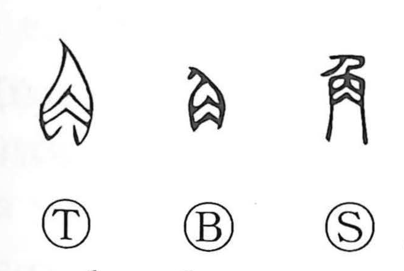

角

Kun: tsuno, kado, sumi | On: kaku
horn ・ angle ・ corner ・ edge ・ to compete ・ to fight
Explanation
角 pictures an animal’s horn. Its pointed, projecting form gives both the horn itself and a sharp corner, angle, or edge. Squared and angular things take the same description.
Animals contend with their horns, so 角 also means to compete, test strength, or struggle against another. Related 較 shares this sphere of comparison and contest.
Horns were also used as containers and instruments. A horn could become a drinking vessel, measure, or trumpet; Shang and Zhou ritual vessels called 角 preserve the older use of the animal horn for wine.